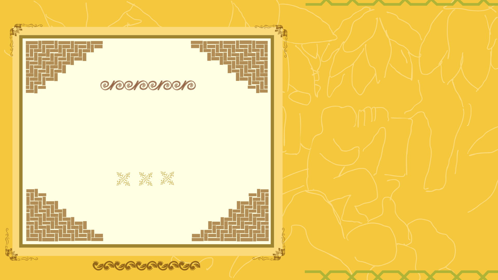

<section id="s09-new" style="position: relative;">
  

  <video class="section-image" id="video-s09" muted playsinline>
    <source src="assets/section_9.mp4" type="video/mp4">
  </video>

  <!-- Nút slide (Vị trí A, B được canh bằng CSS) -->
  
</section>